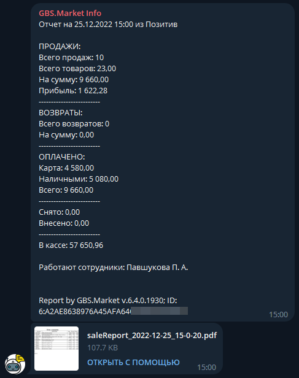
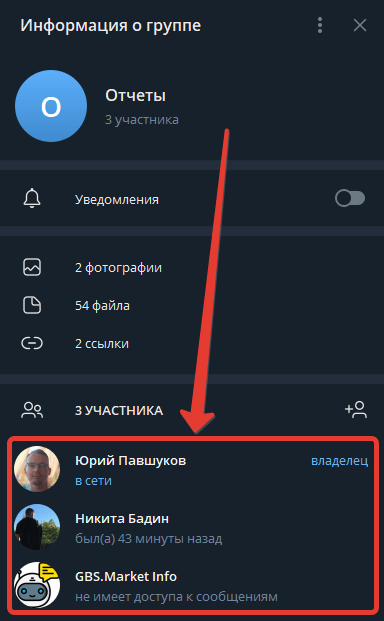
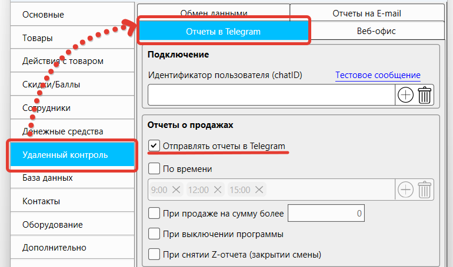
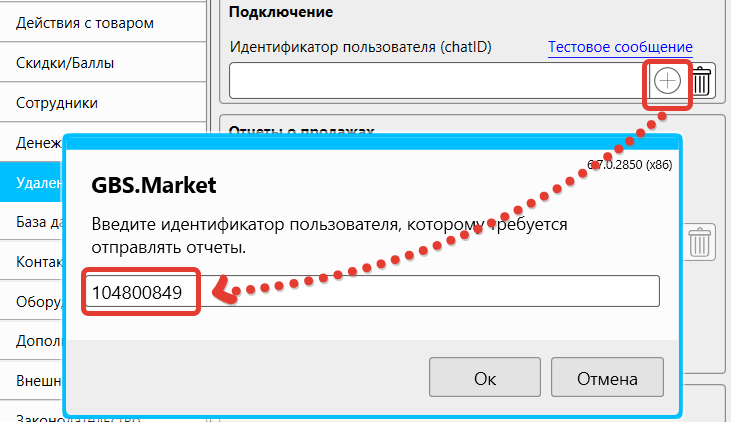
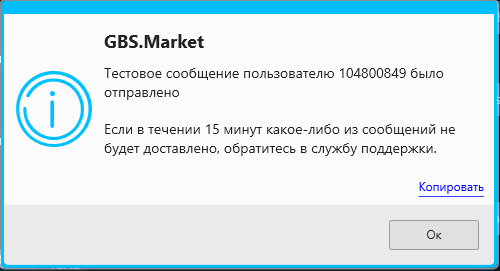

Telegram – один из самых популярных и удобных мессенджеров. В кассовой программе GBS.Market реализована возможность получения отчетов о работе торговой точки (магазина, кафе) в чат или группу в Telegram (телеграм) через бота.
Полезные ссылки
Информация
Внешний вид отчета в Telegram
Отчет в телеграм содержит данные о работе торговой точки. Вот пример такого отчета:
ПРОДАЖИ:
Всего продаж: 10
Всего товаров: 23,00
На сумму: 9 660,00
Прибыль: 1 622,28
-------------------------
ВОЗВРАТЫ:
Всего возвратов: 0
На сумму: 0,00
-------------------------
ОПЛАЧЕНО:
Карта: 4 580,00
Наличными: 5 080,00
Всего: 9 660,00
-------------------------
Снято: 0,00
Внесено: 0,00
-------------------------
В кассе: 57 650,96
Работают сотрудники: Павшуков Ю.А; Бадин Н.С.
На скриншоте ниже показано, как выглядит отчет из торговой точки, отправленный в Telegram. Во вложении к отчету документ в формате PDF, в котором перечислены проданные товары за текущий день.
Внимание
Обратите внимание, что отчет формируется с учетом значения опции "Время начала смены", доступной в настройках программы.
Начните чат с ботом
Для получения отчетов необходимо начать чат с ботом @GBSMarketInfo_bot.
Вы можете создать группу на несколько человек, чтобы вместе получать отчеты. Бота необходимо добавить в качестве участника группы.
Получите chat id
Для того чтобы настроить программу на отправку отчетов, необходимо получить chat id. Отправьте в чат с ботом следующий текст (команду)
А бот в ответ пришлет сообщение с chat id.
Настройте GBS.Market
На главной форме откройте в меню Файл – Настройки – Удаленный контроль – Отчеты в Telegram. Далее включите опцию "Отправлять отчеты".
Затем в поле "Идентификатор пользователя" нажмите кнопку "добавить". Скопируйте chat id из чата с ботом и вставьте в окне ввода.
Далее произведите настройку условий, при которых будет происходить отправка отчетов. Это может быть:
- время
- сумма продажи
- закрытие программы
- закрытие смены (Z-отчет)
Отправьте тестовое сообщение
Перед сохранением настроек проверьте корректность заполнения данных и нажмите "тестовое сообщение", чтобы убедиться, что все сделано верно.
Если все в порядке – программа сообщит об отправке данных, показав сообщение:
Если в течении 15 минут какое-либо из сообщений не будет доставлено, обратитесь в службу поддержки.
Бот пришлет в чат тестовое сообщение.
Дополнительные настройки
Кроме отправки отчетов, в телеграм можно:
- отправлять резервные копии
- присылать напоминания об окончании срока действия лицензии
Отправка резервных копий
Включите опцию Отправлять резервные копии в чат, чтобы программа присылала резервные копии в Телеграм. Резервные копии будут создаваться согласно настройкам, указанных в База данных - Резервное копирование. Подробнее о настройке резервного копирования можно узнать в статье.
Напоминание об окончании лицензии
Включите опцию Напоминать об окончании лицензии, чтобы программа при запуске присылала уведомление о приближающемся окончании срока действия лицензии.
Сохраните настройки
Для вступления изменений в силу, необходимо сохранить настройки программы.
Вопросы и ответы
Можно ли получать отчеты в Телеграм сразу нескольким пользователям?
GBS.Market может отправлять отчеты одному получателю, но таким получателем может быть группа, в которой состоит несколько пользователей. Создайте группу и добавьте в нее пользователей, которые должны получать отчеты.
Что делать, если отчеты в Телеграм не приходят?
Если отправка отчетов настроена, но они не приходят, может быть несколько причин:
- программа была выключена в то время, на которое запланирована отправка отчета. Проверьте, не выключаю ли сотрудники программу раньше и не уходит ли периодически компьютер в "спящий режим"
- убедитесь, что компьютер имеет стабильное подключение к интернету
- проверьте, что используете актуальную версию программы. На устаревших версиях отправка отчетов может не работать